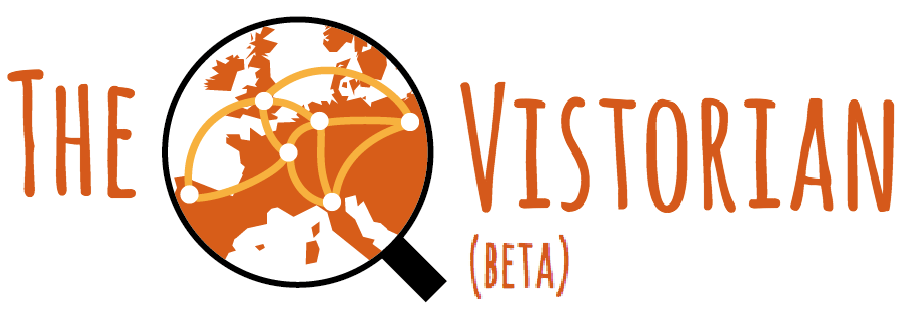

Interactive Visualizations for Dynamic and Multivariate Networks.
Free, online, and open
source.


Or explore our resources:
Help us sustain the Vistorian by citing us:
Benjamin Bach, Nathalie Henry Riche, Roland Fernandez, Emmanoulis Giannisakis, Bongshin Lee, Jean-Daniel Fekete. NetworkCube: Bringing Dynamic Network Visualizations to Domain Scientists . Posters of the Conference on Information Visualization (InfoVis), Oct 2015, Chicago, United States. 2015.
@misc{bach:hal-01205822,
TITLE = {{NetworkCube: Bringing Dynamic Network Visualizations to Domain Scientists}},
AUTHOR = {Bach, Benjamin and Henry Riche, Nathalie and Fernandez, Roland and Giannisakis, Emmanoulis and Lee, Bongshin and Fekete, Jean-Daniel},
URL = {https://hal.inria.fr/hal-01205822},
NOTE = {Poster},
HOWPUBLISHED = {{Posters of the Conference on Information Visualization (InfoVis)}},
YEAR = {2015},
MONTH = Oct
}